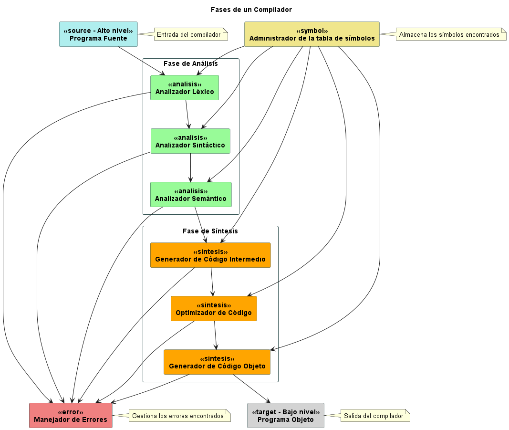

Introducción a los compiladores
Fases de un Compilador
Un compilador es una herramienta fundamental en el proceso de transformar un programa escrito en un lenguaje de alto nivel en código ejecutable por una computadora. Este proceso se divide en varias etapas que conforman las fases del compilador. A continuación, se detallan estas fases y su importancia en el proceso de compilación:
 El diagrama muestra las fases de un compilador, que son los pasos que se siguen para transformar un programa fuente en un programa objeto.
Programa Fuente
El programa fuente es el punto de partida del proceso de compilación. Consiste en el código escrito por el programador en un lenguaje de alto nivel, como C++, Java o Python.
Administrador de la Tabla de Símbolos
Durante el análisis del programa fuente, se encuentran diversos símbolos, como variables, constantes y funciones. El administrador de la tabla de símbolos se encarga de almacenar esta información para su posterior uso en etapas posteriores del compilador.
La primera fase del compilador es el análisis léxico. Aquí, el programa fuente se divide en unidades léxicas llamadas tokens, que representan los elementos básicos del lenguaje de programación, como palabras clave, identificadores, operadores y símbolos.
El analizador sintáctico toma la secuencia de tokens generada por el analizador léxico y verifica que siga las reglas gramaticales del lenguaje de programación. Esto garantiza que la estructura del programa sea correcta desde el punto de vista sintáctico.
Una vez que la estructura sintáctica del programa se ha validado, entra en juego el analizador semántico. Este componente verifica que el programa tenga sentido desde un punto de vista semántico. Por ejemplo, se asegura de que las variables estén declaradas antes de ser utilizadas y que los tipos de datos sean compatibles en las operaciones.
El generador de código intermedio transforma el programa fuente en una representación intermedia, más abstracta y fácil de manipular. Esta etapa facilita la optimización del código y la generación del código objeto final.
El optimizador de código mejora la representación intermedia del programa para hacerlo más eficiente en términos de tiempo de ejecución y consumo de recursos.
Finalmente, el generador de código objeto traduce la representación intermedia del programa en código objeto, que es un conjunto de instrucciones ejecutables por la máquina objetivo.
Manejador de Errores
Durante todo el proceso de compilación, es posible que se encuentren errores léxicos, sintácticos o semánticos en el programa fuente. El manejador de errores se encarga de identificar, reportar y gestionar estos errores de manera adecuada.
Programa Objeto
El resultado final del proceso de compilación es el programa objeto, que consiste en el código ejecutable generado a partir del programa fuente. Este programa objeto puede ser ejecutado directamente por la máquina objetivo.
Conocimientos Adicionales
Código Fuente
El código fuente es el conjunto de instrucciones y declaraciones escritas en el lenguaje de programación que los desarrolladores utilizan para crear programas y aplicaciones. Este código es legible y comprensible para los humanos. Los programadores escriben el código fuente utilizando un editor de texto o un entorno de desarrollo integrado (IDE). El código fuente debe ser compilado o interpretado para convertirlo en un formato que la computadora pueda ejecutar.
Bytecode
El bytecode es un tipo de código que ha sido traducido desde el código fuente a un formato de bajo nivel que es más fácil para una máquina virtual ejecutar. No es código de máquina (que sería específico para un tipo de hardware), sino un paso intermedio entre el código fuente y el código de máquina.
El bytecode es típicamente utilizado en lenguajes de programación como Java y Python. En Java, por ejemplo, el compilador javac traduce el código fuente a bytecode, que luego puede ser ejecutado en cualquier máquina que tenga instalada la Máquina Virtual de Java (JVM), independientemente del sistema operativo o la arquitectura de hardware subyacente.
Si no existieran los compiladores, traductores e intérpretes
Si no existieran los compiladores, traductores e intérpretes, los programadores tendrían que escribir código directamente en lenguaje de máquina, que es una tarea muy compleja y propensa a errores. El lenguaje de máquina es específico para cada tipo de hardware, por lo que los programadores tendrían que escribir diferentes versiones de su código para cada tipo de computadora.
Además, sin los compiladores e intérpretes, los lenguajes de programación de alto nivel como Python, Java, C++, entre otros, no existirían. Estos lenguajes son más fáciles de aprender y usar que el lenguaje de máquina, y permiten a los programadores escribir código de manera más eficiente y con menos errores.